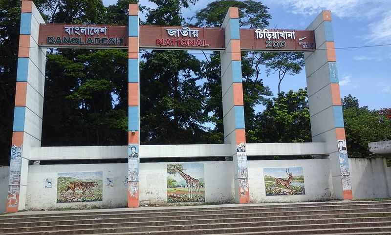

জাতীয় চিড়িয়াখানা
Last Updated: Jun 17, 2023
বাংলাদেশের জাতীয় চিড়িয়াখানা ঢাকার মিরপুরে অবস্থিত একটি চিড়িয়াখানা। এটি বাংলাদেশ সরকারের মৎস্য ও প্রাণিসম্পদ মন্ত্রণালয় এর অধীনস্থ একটি প্রতিষ্ঠান। ১৯৫০ সালে হাইকোর্ট চত্বরে জীবজন্তুর প্রদর্শনশালা হিসেবে প্রতিষ্ঠিত হয় চিড়িয়াখানাটি। পরবর্তীকালে ১৯৭৪ সালে বর্তমান অবস্থানে স্থানান্তরিত হয় এটি। চিড়িয়াখানাটি উদ্বোধন ও সর্বসাধারণের জন্য উন্মুক্ত হয় ১৯৭৪ সালের ২৩ জুন। বছরে প্রায় ৩০ লক্ষ দর্শনার্থী ঢাকা চিড়িয়াখানা পরিদর্শন করে থাকেন। ২০১৫ সালের ৫ ফেব্রুয়ারি নাম পরিবর্তন করে ঢাকা চিড়িয়াখানা থেকে বাংলাদেশ জাতীয় চিড়িয়াখানা নামকরণ করা হয়।ঢাকা চিড়িয়াখানার বার্ষিক বাজেট ৩৭.৫ মিলিয়ন টাকা, যার মধ্যে ২৫ মিলিয়ন টাকা পশুদের খাওয়ানোর জন্য ব্যয় করা হয়। [৩]
ঊনবিংশ শতাব্দীর শেষভাগে ঢাকা শহরের শাহবাগে তৎকালীন নবাবরা একটি ব্যক্তিগত চিড়িয়াখানার গোড়াপত্তন করেন। ১৯৪৭ সালে পাকিস্তান সৃষ্টির পর বাংলাদেশ বা তৎকালীন পূর্ব-পাকিস্তানে একটি চিড়িয়াখানার অভাব অনুভূত হয়। পঞ্চাশের দশকের শেষভাগে ঢাকার সুপ্রিম কোর্টের সামনে বর্তমান ঈদগাহ এলাকায় ৪-৫ একর জায়গা জুড়ে ছোট আকারের একটি চিড়িয়াখানা স্থাপন করা হয়। চিড়িয়াখানাটিতে একটি বড় পুকুর এবং পাড়ের খানিকটা জায়গা জুড়ে একটি বলাকা প্রদর্শনী ছিল। সেখানে রাজহাঁস, পাতিহাঁস, শীতের পরিযায়ী হাঁস এবং অন্যান্য পাখি ছিল। হাড়গিলা, সারস এবং ময়ূরও প্রদর্শিত হত। বানর, হনুমান আর হরিণ ছিল। সরিসৃপের মধ্যে অজগর ও কুমির ছিল প্রধান।[৪]
ঢাকায় একটি আধুনিক চিড়িয়াখানা স্থাপনের ব্যাপারে প্রথম সরকারি সিদ্ধান্ত নেওয়া হয় ১৯৫০ খ্রিস্টাব্দে। তৎকালীন কৃষি, সহযোগিতা ও ত্রাণ বিভাগের এক প্রজ্ঞাপনের মাধ্যমে ঢাকার উপকণ্ঠে একটি চিড়িয়াখানা ও উদ্ভিদ উদ্যান স্থাপনের ঘোষণা দেওয়া হয়। সে বছর ২৬ ডিসেম্বর প্রস্তাবনাটি চুড়ান্তভাবে ঘোষিত হয়। এরপর চিড়িয়াখানা স্থাপনের কোনপ্রকার উদ্যোগ ছাড়াই এক দশক পার হয়ে যায়। ১৯৬১ সালের ১১ মার্চ খাদ্য ও কৃষি বিভাগের এক প্রজ্ঞাপনের বরাতে এক উপদেষ্টা পরিষদের নাম ঘোষণা করা হয়। এ পরিষদের কাজ ছিল প্রস্তাবিত চিড়িয়াখানা ও উদ্ভিদ উদ্যান স্থাপন ও ব্যবস্থাপনার ব্যাপারে সরকারকে পরামর্শ দান। তদানীন্তন পশুপালন সার্ভিসের পরিচালক এই পরিষদের সদস্য সচিব হিসেবে নিয়োগ লাভ করেন।[৪][৫]
আশা করি অবশ্যই আপনারা আপনাদের মূল্যবান মতামত দিবেন।